The Realtek RTD2175P comes off the board
First of all, back up the NOR. Then remove the original HDMI chip and clean the pads. This is where the repair used to stall: the new part costs R$1,700.
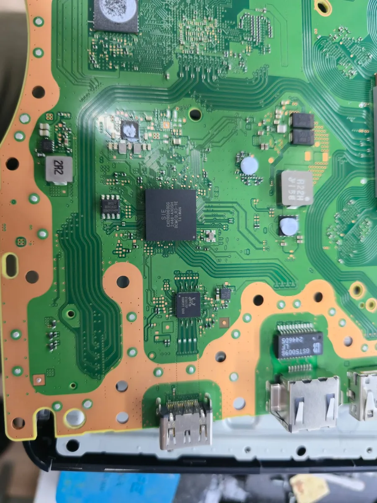
Reads, backs up and converts the PS5 Slim NOR with a CH341A reader.
The Interposer Tech MeoW puts the Nuvoton/Panasonic MN864739 on a board that requires the Realtek RTD2175P. Transparent flex, 1.8 V regulator already soldered and no wires on the board. You convert the NOR for free with our program.
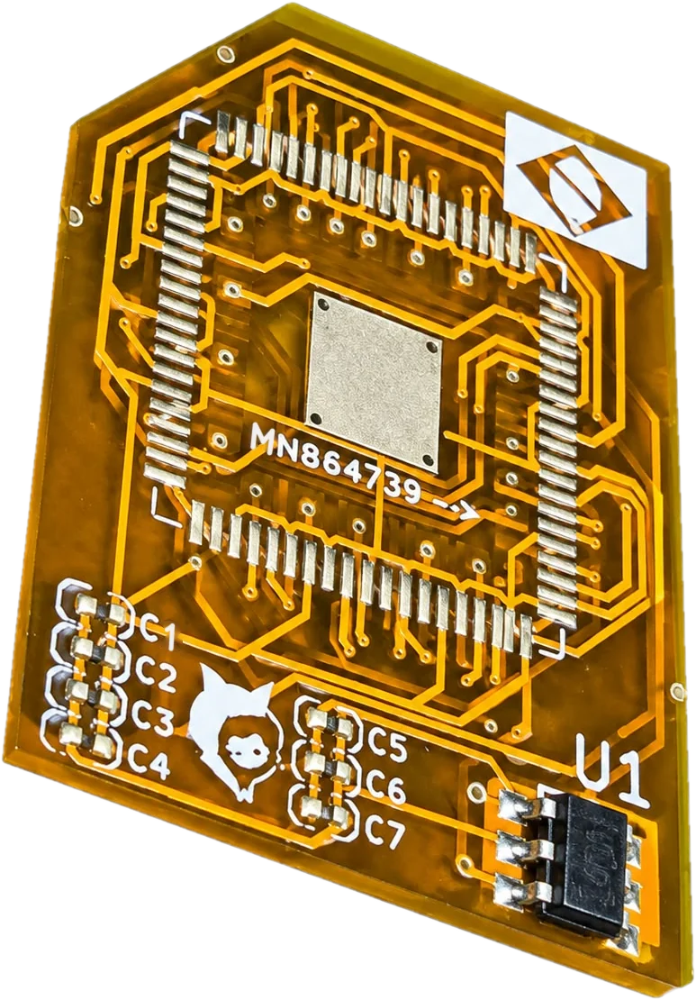
3D model made from the real drawing of the part. Drag to rotate and see both sides.
Some PS5 Slim boards leave the factory with the Realtek RTD2175P HDMI chip. When it fails, the console has no video and the replacement part weighs heavily on the repair quote. Prices below are in Brazilian reais (R$).
With labor, the repair with the Realtek gets close to R$3,000 for the customer, and many people give up. The interposer is what makes it possible to use the cheaper chip on this board. Reference prices: they change with the market.
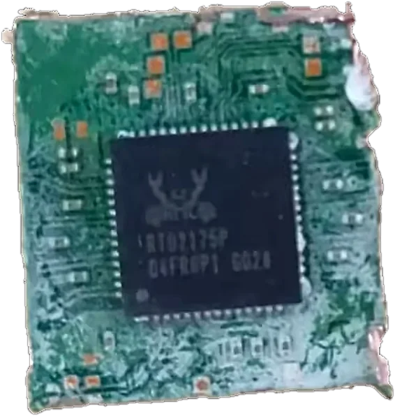
And the Realtek often arrives like this: cut out of another board.
Scroll the page and follow the HDMI chip swap on the board. The 3D model follows photos of the board and the real drawing of the interposer.
First of all, back up the NOR. Then remove the original HDMI chip and clean the pads. This is where the repair used to stall: the new part costs R$1,700.

The transparent flex lets you see the board pads underneath: you align by looking, not guessing. The bottom side has the RTD2175P pinout, and the small holes let you solder by capillarity with the iron.
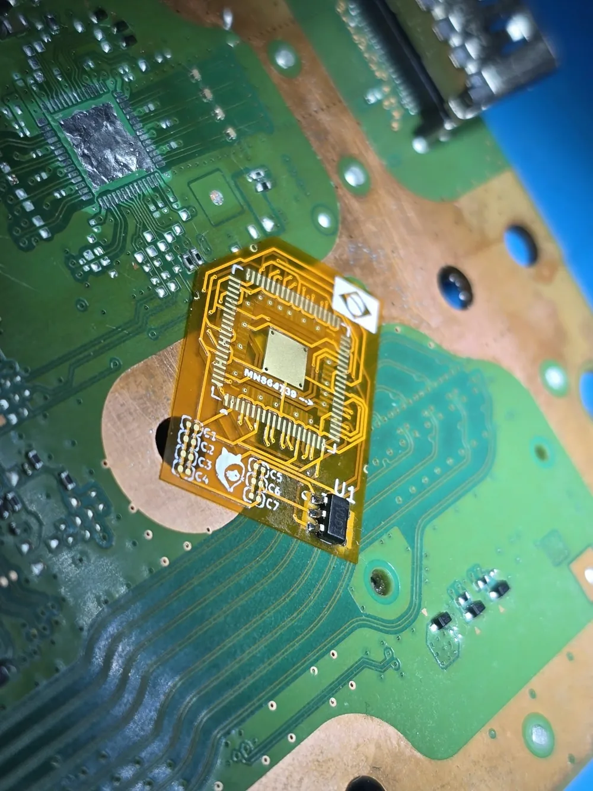
The Nuvoton or Panasonic chip, about R$80, is soldered on the top side. The arrow and the triangle on the silkscreen show the orientation and pin 1.
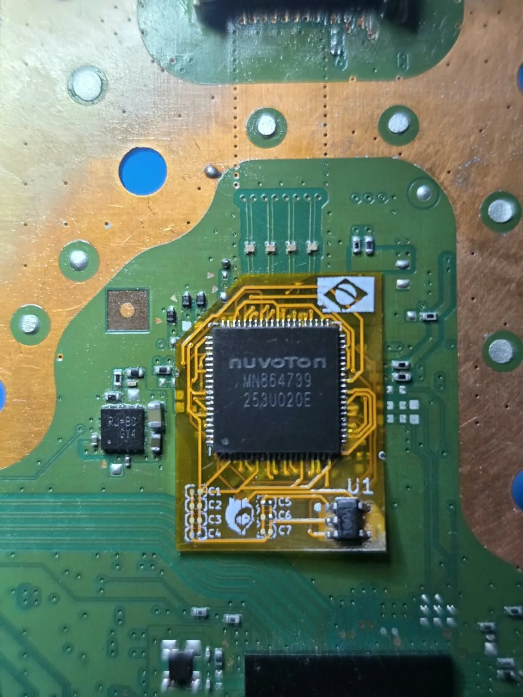
The Realtek PMIC, the small square next to the chip, provides 3.3 V and 0.9 V. The Nuvoton uses 0.9 V and 1.8 V. The interposer takes the 3.3 V from a Realtek pin and routes it to pin 1 of the U1 regulator, already soldered on the part. Pin 2 is GND, pin 3 (EN) gets the 0.9 V, and the 1.8 V output powers the new chip. No wire pulled from the CXD PMIC and no extra load on that circuit.
The board only talks to the chip the NOR tells it to. The free program changes the NOR through the CH341A reader so the PS5 recognizes the new chip. Write it, power on and the video is back.
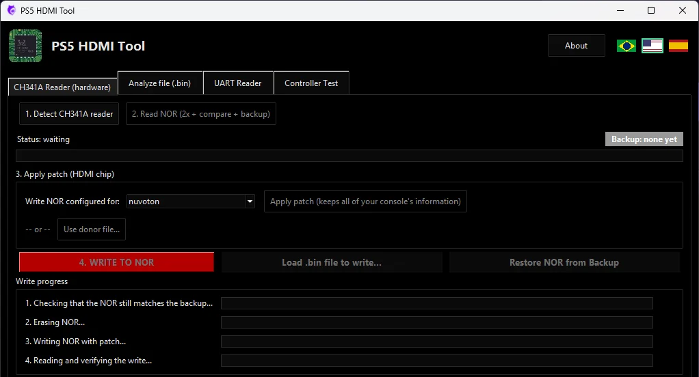
A flexible adapter board made to simplify bench repair: the technician solders the part to the board, solders the chip on top and that's it.
You can see the other side while fitting it. Aligning the interposer pads with the board pads becomes much easier.
U1 is a TI TLV71318 in SOT-23-5. It uses the 3.3 V already present at the Realtek pad and delivers the 1.8 V the MN864739 needs.
The 1.8 V does not come from another point of the board. An overload in the video section stays contained in the part itself.
The regulator EN pin is on the 0.9 V trace: the 1.8 V only rises once the 0.9 V is already there.
Capacitors C1 to C7 come already on the part. Just solder and go.
Bottom: the Realtek RTD2175P pinout. Top: the Nuvoton/Panasonic MN864739 pinout. No rerouting trace by trace.
A triangle on both sides and an arrow for the new chip, to reduce the risk of mounting it reversed.
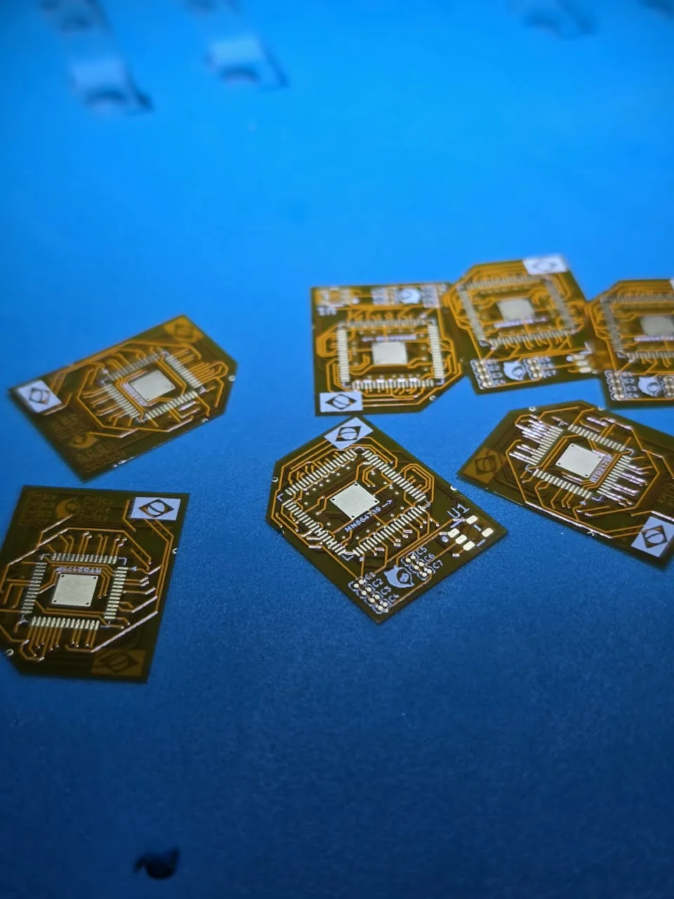
The three ways to bring video back to a board that requires the RTD2175P.
| What changes | Interposer Tech MeoW | Wired interposer | New Realtek |
|---|---|---|---|
| Chip used | MN864739 | MN864739 | RTD2175P |
| Chip cost | About R$80 | About R$80 | About R$1,700 |
| Wires on the board | No | Yes | No |
| Where the 1.8 V comes from | U1 regulator, on the part itself | Another point of the board, such as the CXD PMIC | Not used: the Realtek needs 3.3 V |
| Overload in the video section | Stays contained in the part | Can reach the point the wire comes from | As on the original board |
| Change the NOR | Yes, free with PS5 HDMI Tool | Yes | Not needed |
The interposer solves the physical side. The NOR side is handled by our program, free and open source, made for the bench.
Before writing a customer's board: check the log to see whether the conversion checksum came out as resolved. If the program warns that it did not, use it only on a bench board.
A summary of the process. The full step-by-step guide, with photos and the location of the HDMI chip, is in the guide.
With the CH341A, read the NOR before touching the iron.
In the program, choose nuvoton and preview. Do not write yet.
With flux and hot air, remove the chip and clean the pads.
183 °C paste, align pin 1 looking through the flex and reflow.
On the top side, following the silkscreen arrow.
Magnifier or microscope and multimeter, before powering on.
Write the converted file, power on and test the video.
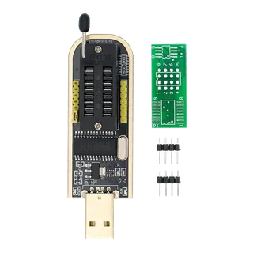
CH341A programmer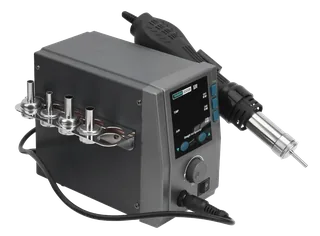
Hot air station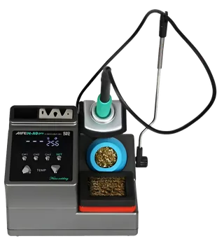
Precision iron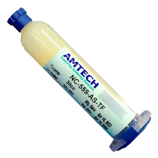
Solder fluxFor technicians. Requires experience in SMD/QFN microsoldering and SPI NOR flashing. Done without preparation, it can destroy the motherboard, and the modification voids the console's factory warranty.
Sold on Mercado Livre and Shopee (Brazil).
No sign-up and no installation.
It is a thin adapter board that sits between the motherboard and the HDMI chip. The Interposer Tech MeoW is soldered onto the Realtek RTD2175P pads with its bottom side and takes the Nuvoton/Panasonic MN864739 on its top side.
Check the marking on the chip between the APU and the HDMI connector: it must read RTD2175P. Do not rely on the position alone, especially on a board that has already been reworked. PS5 HDMI Tool also shows the HDMI chip configured in the NOR.
The part and the program were made for PS5 Slim boards that use the Realtek RTD2175P HDMI chip.
Yes. A board that leaves the factory with the Realtek only talks to the Realtek. PS5 HDMI Tool changes the NOR through the CH341A reader so the console recognizes the Nuvoton or Panasonic.
Yes. Both are the same MN864739, sold under the two brands on the replacement parts market.
As a reference, in Brazil the Realtek RTD2175P costs about R$1,700 for the part alone, and the MN864739 about R$80 on average. Prices change with the market. The interposer price is listed on our Mercado Livre and Shopee stores (Brazil).
No. The U1 regulator, already soldered on the part, takes the 3.3 V from the Realtek pad and delivers the 1.8 V the MN864739 needs.
CH341A reader, hot air station, precision soldering iron, flux, low-temperature solder paste, multimeter and a microscope or magnifier.
We do not recommend it. This job is for technicians experienced in microsoldering and NOR flashing. Done without preparation, it can destroy the motherboard.
If the console powers on normally, suspect the soldering first: a cold joint, a bridge or a shifted chip. If it hangs on the blue check screen, make sure the program reported the conversion checksum as resolved.
Buy the interposer, download the free program and close the repair. Do you run a repair shop, a store or a channel? Talk to us about partnerships.
Test and calibrate the PS5 controller: buttons, sticks, drift, triggers and vibration. Free in the computer browser. On the phone, the Android app has 2 free days.
Control PS-5 is a free app for hacked Nintendo Switch consoles: it connects the DualSense over Bluetooth, with no adapter, with adaptive triggers, light bar and per-game profiles.